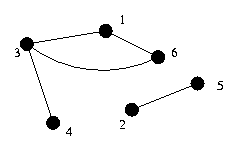
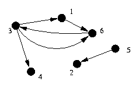
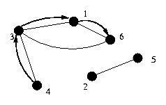
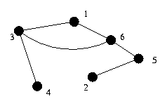
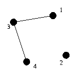
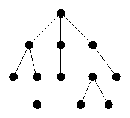
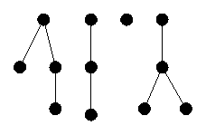
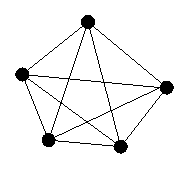
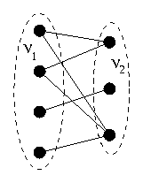

Formally, a graph is the following:
Think of vertices as ``locations''. The set of vertices is the set of all the possible locations. In this analogy, edges represent paths between pairs of those locations; the set E contains all the paths between the locations.
The graph is normally represented using that analogy. Vertices are points
or circles; edges are lines between them.

In this example graph, V = {1, 2, 3, 4, 5, 6} and E = {(1,3), (1,6), (2,5), (3,4), (3,6)}.
Each vertex is a member of the set V. A vertex is sometimes called a node.
Each edge is a member of the set E. Note that some vertices might not be the end point of any edge. Such vertices are termed `isolated'.
Sometimes, numerical values are associated with edges, specifying lengths or costs; such graphs are called edge-weighted graphs (or weighted graphs). The value associated with an edge is called the weight of the edge. A similar definition holds for node-weighted graphs,
Given a set of computers and a set of wires running between pairs of computers, what is the minimum number of machines whose crash causes two given machines to be unable to communicate? (The two given machines will not crash.)
Graph: The vertices of the graph are the computers. The edges are the wires between the computers.
Farmer John owns a large number of fences, which he must periodically check for integrity. He keeps track of his fences by maintaining a list of points at which fences intersect. He records the name of the point and the one or two fence names that touch that point. Every fence has two end points, each at some intersection point, although the intersection point may be the end point of only one fence.
Given a fence layout, calculate if there is a way for Farmer John to ride his horse to all of his fences without riding along a fence more than once. Farmer John can start and finish anywhere, but cannot cut across his fields (i.e., the only way he can travel between intersection points is along a fence). If there is a way, find one way.
Graph: Farmer John starts at intersection points and travels between the points along fences. Thus, the vertices of the underlying graph are the intersection points, and the fences represent edges.
Given: Two squares on an 8x8 chessboard. Determine the shortest sequence of knight moves from one square to the other.
Graph: The graph here is harder to see. Each location on the chessboard represents a vertex. There is an edge between two positions if it is a legal knight move.
Farmer John created a huge maze of fences in a field. He omitted two fence segments on the edges, thus creating two ``exits'' for the maze. The maze is a `perfect' maze; you can find a way out of the maze from any point inside it.
Given the layout of the maze, calculate the number of steps required to exit the maze from the `worst' point in the maze (the point that is `farther' from either exit when walking optimally to the closest exit).
Here's what one particular W=5, H=3 maze looks like:
>
+-+-+-+-+-+
| |
+-+ +-+ + +
| | | |
+ +-+-+ + +
| | |
+-+ +-+-+-+
Graph: The vertices of the graph are positions in the grid. There is an edge between two vertices if they represent adjacent positions that are not separated by a wall.
An edge is a self-loop if it is of the form (u,u). The sample graph contains no self-loops.
A graph is simple if it neither contains self-loops nor contains an edge that is repeated in E. A graph is called a multigraph if it contains a given edge more than once or contain self-loops. For our discussions, graphs are assumed to be simple. The example graph is a simple graph.
An edge (u,v) is incident to both vertex u and vertex v. For example, the edge (1,3) is incident to both vertex 1 and vertex 3.
The degree of a vertex is the number of edges which are incident to it. For example, vertex 3 has degree 3, while vertex 4 has degree 1.
Vertex u is adjacent to vertex v if there is some edge to which both are incident (that is, there is an edge between them). For example, vertex 2 is adjacent to vertex 5.
A graph is said to be sparse if the total number of edges is small compared to the total number possible ((N x (N-1))/2) and dense otherwise. For a given graph, whether it is dense or sparse is not well-defined.
Graphs described thus far are called undirected, as the edges go `both ways'. So far, the graphs have connoted that if one can travel from vertex 1 to vertex 3, one can also travel from vertex 3 to vertex 1. In other words, (1,3) being in the edge set implies (3,1) is in the edge set.
Sometimes, however, a graph is directed, in which case the edges have a direction. In this case, the edges are called arcs.
Directed graphs are drawn with arrows to show direction.

The out-degree of a vertex is the number of arcs which begin at that vertex. The in-degree of a vertex is the number of arcs which end at that vertex. For example, vertex 6 has in-degree 2 and out-degree 1.
A graph is assumed to be undirected unless specifically called a directed graph.
A path from vertex u to vertex x is a sequence of vertices (v 0, v 1, ..., v k) such that v 0 = u and v k = x and (v 0, v 1) is an edge in the graph, as is (v 1, v 2), (v 2, v 3), etc. The length of such a path is k.
For example, in the undirected graph above, (4, 3, 1, 6) is a
path.

This path is said to contain the vertices v 0, v 1, etc., as well as the edges (v 0, v 1), (v 1, v 2), etc.
Vertex x is said to be reachable from vertex u if a path exists from u to x.
A path is simple if it contains no vertex more than once.
A path is a cycle if it is a path from some vertex to that same vertex. A cycle is simple if it contains no vertex more than once, except the start (and end) vertex, which only appears as the first and last vertex in the path.
These definitions extend similarly to directed graphs (e.g., (v 0, v 1), (v 1, v 2), etc. must be arcs).
The choice of representation of a graph is important, as different representations have very different time and space costs.
The vertices are generally tracked by numbering them, so that one can index them just by their number. Thus, the representations focus on how to store the edges.
The most obvious way to keep track of the edges is to keep a list of the pairs of vertices representing the edges in the graph.
This representation is easy to code, fairly easy to debug, and fairly space efficient. However, determining the edges incident to a given vertex is expensive, as is determining if two vertices are adjacent. Adding an edge is quick, but deleting one is difficult if its location in the list is not known.
For weighted graphs, this representation also keeps one more number for each edge, the edge weight. Extending this data structure to handle directed graphs is straightforward. Representing multigraphs is also trivial.
| V1 | V2 | |
| e1 | 4 | 3 |
| e2 | 1 | 3 |
| e3 | 2 | 5 |
| e4 | 6 | 1 |
| e5 | 3 | 6 |
A second way to represent a graph utilizes an adjacency matrix. This is a N by N array (N is the number of vertices). The i,j entry contains a 1 if the edge (i,j) is in the graph; otherwise it contains a 0. For an undirected graph, this matrix is symmetric.
This representation is easy to code. It's much less space efficient, especially for large, sparse graphs. Debugging is harder, as the matrix is large. Finding all the edges incident to a given vertex is fairly expensive (linear in the number of vertices), but checking if two vertices are adjacent is very quick. Adding and removing edges are also very inexpensive operations.
For weighted graphs, the value of the (i,j) entry is used to store the weight of the edge. For an unweighted multigraph, the (i,j) entry can maintain the number of edges between the vertices. For a weighted multigraph, it's harder to extend this.
The sample undirected graph would be represented by the following adjacency matrix:
| V1 | V2 | V3 | V4 | V5 | V6 | |
| V1 | 0 | 0 | 1 | 0 | 0 | 1 |
| V2 | 0 | 0 | 0 | 0 | 1 | 0 |
| V3 | 1 | 0 | 0 | 1 | 0 | 1 |
| V4 | 0 | 0 | 1 | 0 | 0 | 0 |
| V5 | 0 | 1 | 0 | 0 | 0 | 0 |
| V6 | 1 | 0 | 1 | 0 | 0 | 0 |
It is sometimes helpful to use the fact that the (i,j) entry of the adjacency matrix raised to the k-th power gives the number of paths from vertex i to vertex j consisting of exactly k edges.
The third representation of graph is to keep track of all the edges incident to a given vertex. This can be done by using an array of length N, where N is the number of vertices. The ith entry in this array is a list of the edges incident to i'th vertex (edges are represented by the index of the other vertex incident to that edge).
This representation is much more difficult to code, especially if the number of edges incident to each vertex is not bounded, so the lists must be linked lists (or dynamically allocated). Debugging this is difficult, as following linked lists is more difficult. However, this representation uses about as much memory as the edge list. Finding the vertices adjacent to each node is very cheap in this structure, but checking if two vertices are adjacent requires checking all the edges adjacent to one of the vertices. Adding an edge is easy, but deleting an edge is difficult, if the locations of the edge in the appropriate lists are not known.
Extend this representation to handle weighted graphs by maintaining both the weight and the other incident vertex for each edge instead of just the other incident vertex. Multigraphs are already representable. Directed graphs are also easily handled by this representation, in one of several ways: store only the edges in one direction, keep a seperate list of incoming and outgoing arcs, or denote the direction of each arc in the list.
| Adjacent | |
| Vertex | Vertices |
| 1 | 3, 6 |
| 2 | 5 |
| 3 | 6, 4, 1 |
| 4 | 3 |
| 5 | 2 |
| 6 | 3, 1 |
For some graphs, the graph itself does not have to be stored at all. For example, for the Knight moves and Overfencing problems, it is easy to calculate the neighbors of a vertex, check adjacency, and determine all the edges without actually storing that information, thus, there is no reason to actually store that information; the graph is implicit in the data itself.
If it is possible to store the graph in this format, it is generally the correct thing to do, as it saves a lot on storage and reduces the complexity of your code, making it easy to both write and debug.
If N is the number of vertices, M the number of edges, and d max the maximum degree of a node, the following table summarizes the differences between the representations:
| Efficiency | Edge List | Adj Matrix | Adj List |
| Space | 2xM | N2 | 2xM |
| Adjacency Check | M | 1 | d max |
| List of Adj Vertices | M | N | d max |
| Add Edge | 1 | 1 | 1 |
| Delete Edge | M | 2 | 2xd max |
An undirected graph is said to be connected if there is a
path from every vertex to every other vertex. The example graph
is not connected, as there is no path from vertex 2 to
vertex 4.
However, if you add an edge between vertex 5 and vertex 6, then
the graph becomes connected.

A component of a graph is a maximal subset of the vertices such that every vertex is reachable from each other vertex in the component. The original example graph has two components: {1, 3, 4, 6} and {2, 5}. Note that {1, 3, 4} is not a component, as it is not maximal.
A directed graph is said to be strongly connected if there is a path from every vertex to every other vertex.
A strongly connected component of a directed graph is a vertex u and the collection of all vertices v such that there is a path from u to v and a path from v to u.
Graph G' = (V', E') is a subgraph of G = (V, E) if V' is a subset of V and E' is a subset of E.
The subgraph of G induced by V' is the graph (V', E'), where E' consists of all the edges of E that are between members of V'.
For example, for V' = {1, 3, 4, 2}, the subgraph induced is:

An undirected graph is said to be a tree if it contains no cycles
and is connected.

Many trees are what is called rooted, where there is a notion of the "top" node, which is called the root. Thus, each node has one parent, which is the adjacent node which is closer to the root, and may have any number of children, which are the rest of the nodes adjacent to it. The tree above was drawn as a rooted tree.
An undirected graph which contains no cycles is called a forest.

A directed acyclic graph is often referred to as a dag.
A graph is said to be complete if there is an edge between every
pair of vertices.

A graph is said to be bipartite if the vertices can be split into
two sets V 1 and V 2 such there are no edges between two vertices of
V 1 or two vertices of V 2.
